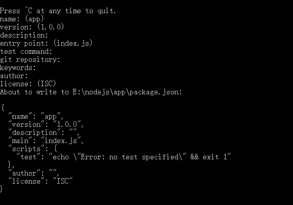

1、在nodejs 安装目录下手动新建一个文件夹 例如命名为 app，
2，使用命令进入文件夹
cd app
3、使用 npm init 命令 初始化一个项目，dos命令行会出现一些提示，一步一步的输入，如下图：

最后输入 yes 或者y 确定
此时，项目目录app下会多出一个package.json文件，里面报存了刚才输入进去的相关信息
4、将express 安装到应用所在目录，例如这里就是讲express安装到 app目录中，输入以下命令：
npm install express --save
此步骤会将express 安装并保存到依赖表中，此时app目录下会多出一个node_modules目录，打开这个目录可以看到，里面是一个名为"Express"的目录；